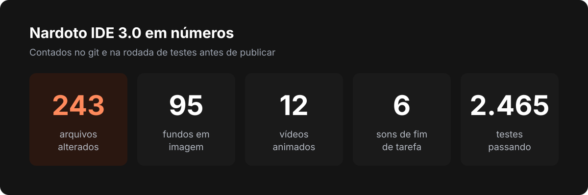
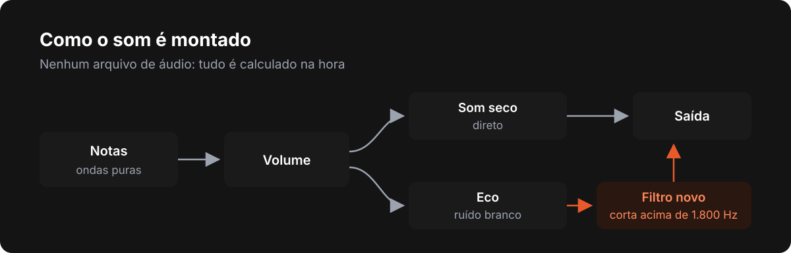

Nardoto
NardotoNardoto IDE 3.0: vidro, temas clássicos e um chat que descansa
A versão 3.0 do Nardoto IDE traz o tema Liquid Glass, os temas Windows XP e 2000, seis sons de fim de tarefa e uma conversa mais fácil de ler no dia a dia.

O Nardoto IDE chegou à versão 3.0. É o editor de código que nasceu do chat do Studio: um lugar para conversar com as IAs (Claude, Codex, Antigravity, Grok e Mark-I) enquanto elas trabalham nos meus projetos. A versão pula da 2.7 direto para a 3.0: por fora, é quase um IDE novo.
Foram dois commits desde a versão anterior, mas grandes: 243 arquivos alterados e cerca de 9.400 linhas novas. Só os temas visuais respondem por 124 desses arquivos.

O visual: vidro e nostalgia
A maior novidade é o tema Liquid Glass, o mesmo que comecei a fazer no Studio. As janelas viram superfícies de vidro sobre um fundo que a pessoa escolhe: são 95 imagens prontas, 12 vídeos animados ou uma foto própria. Dá para trocar a cor de destaque e escolher entre o estilo "Vidro suave" e o "Líquido".
Do outro lado, entraram dois temas clássicos: Windows XP e Windows 2000. São o oposto do vidro: leves, sem animação e sem desfoque, bons para computador mais fraco. O XP ainda toca o som de inicialização do Windows quando é escolhido.
Também dá para escolher o estilo dos ícones (Circuito, Heroicons Solid, Solar ou Lucide), e o navegador interno ganhou um painel próprio, com abas separadas das abas de arquivo.
Um som para quando a tarefa termina
Quando deixo uma IA trabalhando e vou fazer outra coisa, o IDE toca um som ao terminar. Antes havia um só. Agora são seis: Sopro, Sino, Gota, Marimba, Acorde e o alerta do MSN, que entrou a pedido e ficou ótimo.
Cinco deles não são arquivos de áudio. São gerados por código na hora, com o Web Audio do navegador: cada nota é uma soma de ondas puras (senoides), e o "sino" usa as proporções de frequência de um sino de verdade. Só o MSN vem de um arquivo.
O que deu errado
O chiado. O Sopro e o Sino saíram com um chiado no fim. A causa era o eco artificial: para não carregar um arquivo de áudio, ele é feito com ruído branco que vai sumindo, e nos sons longos esse ruído aparecia. A correção foi passar o eco por um filtro que corta os agudos acima de 1.800 Hz e tirar do sino a nota mais aguda, perto de 5.200 Hz.

O quadrado em volta da mensagem. No Liquid Glass, toda mensagem minha aparecia dentro de um retângulo largo. A regra do tema queria pintar o balão da mensagem, mas mirava na linha inteira da conversa. Bastou apontar para o balão.
Os testes que não rodavam. Na hora de fechar a versão, nenhum teste automático rodava, nem os antigos. Parecia instalação quebrada. Era a letra do disco: aberto pelo editor, o caminho chegava como c:\ minúsculo, e a ferramenta de teste (Vitest) carregava duas cópias de si mesma, uma para c: e outra para C:. Rodando a partir de C: maiúsculo, 2.465 testes passaram. Antes de publicar, ainda corrigi 5 testes que tinham ficado para trás.
Um chat que cansa menos
Passo horas lendo respostas das IAs, e comecei a sentir que ler no chat do VS Code era mais tranquilo que no meu. Não conseguia dizer por quê. Medi o texto do IDE e comparei com o do VS Code.
| Nardoto IDE (antes) | Chat do VS Code | |
|---|---|---|
| Fonte | Public Sans, larga e de traço grosso | Segoe UI, mais estreita e fina |
| Cor do texto | quase branco | cinza-claro |
| Fundo | papel de parede com textura | cinza liso |
| Tamanho | 13 px | 13 px |
O tamanho era o mesmo. A diferença estava no peso da letra. Montei uma comparação na tela real do IDE, trocando uma coisa de cada vez, e a fonte foi o que mais mudou a sensação. A conversa agora usa a fonte do sistema (a Segoe UI no Windows, a do próprio Mac no macOS). O papel de parede e a cor ficaram como estavam, porque eu gosto deles.
A conversa também passou a ocupar a largura toda, com uma margem confortável dos lados, e a pergunta fixada no topo ganhou o mesmo estilo do balão, com troca suave entre uma mensagem e outra.
O resto da lista
- O Mark-I ganhou botão fixo na barra de IAs, com a logo certa, e a IA escolhida aparece num botão destacado na cor dela.
- As contas do Claude, do Codex e do Antigravity mostram o plano de cada uma, que dá para ajustar à mão.
- No Antigravity, o agente não apaga nada sem autorização, e uma conversa pesada demais recomeça com um resumo, para voltar a responder rápido.
- As ações do agente aparecem em português simples, como "Leu index.js" e "Editou App.tsx".
- A Produtividade mostra o trabalho no código: linhas escritas e removidas, arquivos e commits.
- Correções: o Ctrl+A seleciona só a área onde se clicou (antes pegava a janela inteira), o botão Reduzir chat funciona com o centro vazio e a lista lateral das Configurações fica parada enquanto o conteúdo rola.
O preço do vidro
O instalador cresceu de 120 MB para 179 MB. A diferença é quase toda o pacote de fundos e vídeos do Liquid Glass. Achei que valia: são as imagens que fazem o tema funcionar sem internet.
A atualização chega sozinha para quem já tem o IDE instalado.
Escrito por Tharcisio Nardoto, engenheiro civil e criador do Nardoto Studio.